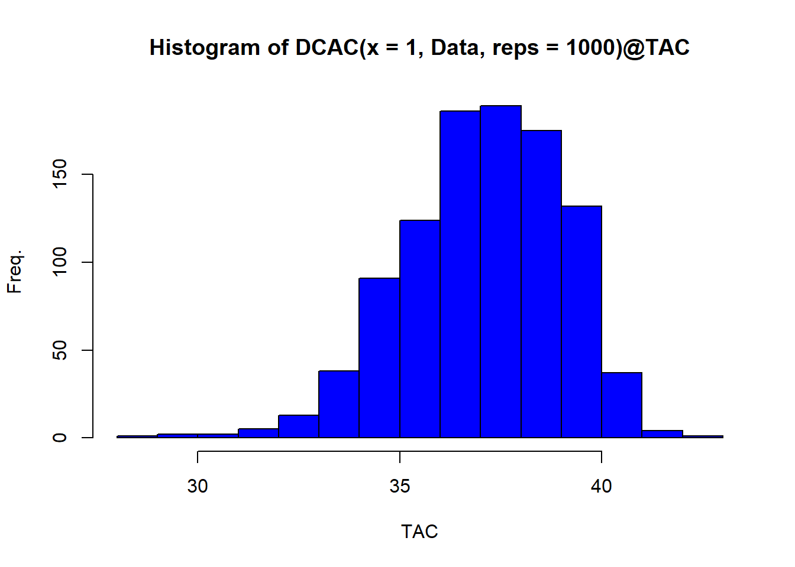

Chapter 22 Developing Custom Management Procedures
DLMtool was designed to be extensible in order to promote the development of new Management Procedures. In this chapter we design a series of new Management Procedures that include spatial controls and input controls in the form of size limit restrictions.
If you wish, you can also add your newly developed MPs to the DLMtool package so they are accessible to other uses. Of course you will be credited as the author. Please contact us for details how to do this.
As we saw before, real data are stored in a class of objects Data.
The DLMtool MSE function generates simulated data and puts it in exactly the same format as real data. This is highly desirable because it means that the same MP code that is tested in the MSE can then be used to make management recommendations.
If an MP is coded incorrectly it may catastrophically fail MSE testing and will therefore be excluded from use in management.
22.1 The Anatomy of an MP
Let’s examine an existing output MP to identify the MP data requirements.
avail('Output')## [1] "AvC" "BK" "BK_CC" "BK_ML" "CC1"
## [6] "CC4" "CompSRA" "CompSRA4010" "DAAC" "DBSRA"
## [11] "DBSRA_40" "DBSRA4010" "DCAC" "DCAC_40" "DCAC_ML"
## [16] "DCAC4010" "DD" "DD4010" "DepF" "DynF"
## [21] "Fadapt" "Fdem" "Fdem_CC" "Fdem_ML" "Fratio"
## [26] "Fratio_CC" "Fratio_ML" "Fratio4010" "GB_CC" "GB_slope"
## [31] "GB_target" "Gcontrol" "HDAAC" "Islope1" "Islope4"
## [36] "IT10" "IT5" "Itarget1" "Itarget4" "ITM"
## [41] "L95target" "LstepCC1" "LstepCC4" "Ltarget1" "Ltarget4"
## [46] "MCD" "MCD4010" "Rcontrol" "Rcontrol2" "SBT1"
## [51] "SBT2" "SPmod" "SPMSY" "SPslope" "SPSRA"
## [56] "SPSRA_ML" "YPR" "YPR_CC" "YPR_ML"Since we’ve seen it used as a default MP in lots of the examples above, lets learn more about DCAC
?DCACWe can even see all the code for this MP by simply typing the name of the MP into the console (this is a fantastic advantage of using R - there is complete transparency about package functions):
DCAC## function (x, Data, reps = 100)
## {
## dependencies = "Data@AvC, Data@t, Data@Mort, Data@CV_Mort, Data@FMSY_M, Data@CV_FMSY_M, Data@Dt, Data@CV_Dt, Data@BMSY_B0, Data@CV_BMSY_B0"
## C_tot <- Data@AvC[x] * Data@t[x]
## Mdb <- trlnorm(reps, Data@Mort[x], Data@CV_Mort[x])
## FMSY_M <- trlnorm(reps, Data@FMSY_M[x], Data@CV_FMSY_M[x])
## Bt_K <- trlnorm(reps, Data@Dt[x], Data@CV_Dt[x])
## if (any(is.na(c(Data@BMSY_B0[x], Data@CV_BMSY_B0[x]))))
## return(NA)
## BMSY_K <- rbeta(reps, alphaconv(Data@BMSY_B0[x], Data@BMSY_B0[x] *
## Data@CV_BMSY_B0[x]), betaconv(Data@BMSY_B0[x], Data@BMSY_B0[x] *
## Data@CV_BMSY_B0[x]))
## Rec <- new("Rec")
## Rec@TAC <- TACfilter(C_tot/(Data@t[x] + ((1 - Bt_K)/(BMSY_K *
## FMSY_M * Mdb))))
## Rec
## }
## <bytecode: 0x000000001fd8ebd0>
## <environment: namespace:DLMtool>
## attr(,"class")
## [1] "MP"“Crikey that looks complicated!” might be your first reaction. However this output MP function is easily demystified.
Like all MPs it has three arguments: x, Data and reps.
The argument x is the position in the Data object. When real data are stored in a Data object, there is only one position - there is only one real data set.
However, in MSE we conduct many simulations and x refers to simulated data from simulation number x. Any single parameters such as natural mortality rate (Mort) are a vector (nsim long). See Data@Mort[x] in the DCAC code. Any time series such as annual catches or relative abundance indices, are a matrix of nsim rows and nyears columns.
A range of objects of class Data are available:
avail('Data')## [1] "Atlantic_mackerel" "China_rockfish" "Cobia"
## [4] "Example_datafile" "Gulf_blue_tilefish" "ourReefFish"
## [7] "Red_snapper" "SimulatedData" "Simulation_1"
## [10] "China_rockfish2" "Madeup" "Recs"For simplicity lets use a Data object with just one simulation, Simulation_1 and rename it Data
Data <- Simulation_1Since there is only one simulation in this data set (1 position) we can now see a single value of natural mortality rate:
Data@Mort## [1] 0.2244735And a matrix of catches with only 1 row:
Data@Cat## [,1] [,2] [,3] [,4] [,5] [,6] [,7]
## [1,] 4.275057 12.43761 14.63192 35.31725 28.69802 30.84651 24.14059
## [,8] [,9] [,10] [,11] [,12] [,13] [,14]
## [1,] 36.78335 29.27517 38.18088 59.30242 56.08995 37.96849 51.84985
## [,15] [,16] [,17] [,18] [,19] [,20] [,21] [,22]
## [1,] 60.76729 41.53713 39.31114 57.9673 57.2248 72.37596 80.69301 76.63558
## [,23] [,24] [,25] [,26] [,27] [,28] [,29] [,30]
## [1,] 59.37687 48.82643 50.38803 80.71158 53.35875 74.31955 48.83082 43.348
## [,31] [,32] [,33] [,34] [,35] [,36] [,37]
## [1,] 65.17864 49.94281 47.38492 45.23197 80.92438 51.91477 29.36491
## [,38] [,39] [,40] [,41] [,42] [,43] [,44]
## [1,] 43.44834 49.46923 50.33217 49.53639 39.28779 27.31767 38.97092
## [,45] [,46] [,47] [,48] [,49] [,50]
## [1,] 51.1054 37.34677 37.33128 24.24094 23.47756 21.08158We could generate a single TAC recommendation from these data using DCAC by specifying position 1 (there is only 1 simulation) and by setting reps=1 (we want a single DCAC TAC recommendation)
DCAC(x=1,Data,reps=1)## TAC (median)
## 37.5485If we wanted a stochastic estimate of the TAC we could increase the number of reps:
hist(DCAC(x=1,Data,reps=1000)@TAC,xlab="TAC",ylab="Freq.",col="blue")
22.2 A Constant Catch MP
We’ve now got a better idea of the anatomy of an MP. It is a function that must accept three arguments:
- x: a simulation number
- Data: an object of class
Data - reps: the MP can provide a sample of TACs
repslong.
Let’s have a go at designing our own custom MP that can work with DLMtool. We’re going to develop an MP that sets the TAC as the ‘3rd highest catch’.
We decide to call our function THC
THC<-function(x, Data, reps){
# Find the position of third highest catch
THCpos<-order(Data@Cat[x,],decreasing=T)[3]
# Make this the mean TAC recommendation
THCmu<-Data@Cat[x,THCpos]
# A sample of the THC is taken according to a fixed CV of 10%
TACs <- THCmu * exp(rnorm(reps, -0.1^2/2, 0.1)) # this is a lognormal distribution
Rec <- new("Rec") # create a 'Rec'object
Rec@TAC <- TACs # assign the TACs to the TAC slot
Rec # return the Rec object
}To recap that’s just seven lines of code:
THC<-function(x, Data, reps){
THCpos<-order(Data@Cat[x,],decreasing=T)[3]
THCmu<-Data@Cat[x,THCpos]
Rec <- new("Rec")
Rec@TAC <- THCmu * exp(rnorm(reps, -0.1^2/2, 0.1))
Rec
}We can quickly test our new MP for the example Data object
THC(x=1,Data,reps=10)@TAC## [1] 80.76040 93.73530 78.57651 71.52528 86.93342 93.19337 84.81037
## [8] 83.08070 71.91512 82.12945Now that we know it works, to make the function compatible with the DLMtool package we have to assign it the class ‘MP’ so that DLMtool recognizes the function as a management procedure
class(THC)<-"MP"If we want to run the MSE in parallel we need to export the newly created function to the cluster:
sfExport('THC')22.3 A More Complex MP
The THC MP is simple and frankly not a great performer (depending on depletion, life-history, adherence to TAC recommendations).
Let’s innovate and create a brand new MP that could suit a catch-data-only stock like Indian Ocean Longtail tuna!
It may be possible to choose a single fleet and establish a catch rate that is ‘reasonable’ or ‘fairly productive’ relative to current catch rates. This could be for example, 40% of the highest catch rate observed for this fleet or, for example, 150% of current cpue levels.
It is straightforward to design an MP that will aim for this target index level by making adjustments to the TAC.
We will call this MP TCPUE, short for target catch per unit effort:
TCPUE<-function(x,Data,reps){
mc<-0.05 # max change in TAC
frac<-0.3 # target index is 30% of max
nyears<-length(Data@Ind[x,]) # number of years of data
smoothI<-smooth.spline(Data@Ind[x,]) # smoothed index
targetI<-max(smoothI$y)*frac # target
currentI<-mean(Data@Ind[x,(nyears-2):nyears]) # current index
ratio<-currentI/targetI # ratio currentI/targetI
if(ratio < (1 - mc)) ratio <- 1 - mc # if currentI < targetI
if(ratio > (1 + mc)) ratio <- 1 + mc # if currentI > targetI
Rec <- new("Rec")
Rec@TAC <- Data@MPrec[x] * ratio * exp(rnorm(reps, -Data@CV_Ind[x]^2/2, Data@CV_Ind[x]))
Rec
}The TCPUE function simply decreases the past TAC (stored in Data@MPrec) if the index is lower than the target and increases the TAC if the index is higher than the target.
All that is left is to make it compatible with DLMtool:
class(TCPUE)<-"MP"
sfExport("TCPUE")22.4 Beyond the Catch Limit
All management procedures return an object of class ‘Rec’ that contains 13 slots:
slotNames("Rec")## [1] "TAC" "Effort" "Spatial" "Allocate" "LR5" "LFR"
## [7] "HS" "Rmaxlen" "L5" "LFS" "Vmaxlen" "Fdisc"
## [13] "Misc"We’ve already seen the TAC slot in the previous exercise. The remaining slots relate to various forms of input control:
- Effort (total allowable effort (TAE) relative to last historical year)
- Spatial - Fraction of each area that is open
- Allocate - Allocation of effort from closed areas to open areas
- LR5 - Length at 5% retention
- LFR - Length at 100% retention
- HS - Upper slot limit
- Rmaxlen - Retention of the maximum length class
- L5 - Length at 5% selection (e.g a change in gear type)
- LFS - Length at 100% selection (e.g a change in gear type)
- Vmaxlen - Selectivity of the maximum length class
- Fdisc - Update the discard mortality if required
- Misc - An optional slot for storing additional information
The curE MP just keeps effort constant at current levels:
curE## function (x, Data, ...)
## {
## rec <- new("Rec")
## rec@Effort <- 1
## rec
## }
## <environment: namespace:DLMtool>
## attr(,"class")
## [1] "MP"Note that only the Effort slot in the Rec object is populated in this case.
To highlight the differences among Input control MPs examine spatial control MP MRreal that closes area 1 to fishing and reallocates fishing to the open area 2:
MRreal## function (x, Data, ...)
## {
## rec <- new("Rec")
## rec@Allocate <- 1
## rec@Spatial <- c(0, rep(1, Data@nareas - 1))
## return(rec)
## }
## <environment: namespace:DLMtool>
## attr(,"class")
## [1] "MP"In contrast ‘MRnoreal’ does not reallocate fishing effort:
MRnoreal## function (x, Data, ...)
## {
## rec <- new("Rec")
## rec@Allocate <- 0
## rec@Spatial <- c(0, rep(1, Data@nareas - 1))
## return(rec)
## }
## <environment: namespace:DLMtool>
## attr(,"class")
## [1] "MP"The MP matlenlim only specifies the parameters of length retention using an estimate of length at 50% maturity (Stock@L50):
matlenlim## function (x, Data, ...)
## {
## dependencies = "Data@L50"
## rec <- new("Rec")
## rec@LR5 <- Data@L50[x] * 0.95
## rec@LFR <- Data@L50[x]
## rec
## }
## <environment: namespace:DLMtool>
## attr(,"class")
## [1] "MP"22.4.1 An Example Effort Control
Here we will copy and modify the MP we developed earlier to specify a new version of the target catch per unit effort MP (TCPUE) that provides effort recommendations:
TCPUE_e<-function(x,Data,reps){
mc<-0.05 # max change in TAC
frac<-0.3 # target index is 30% of max
nyears<-length(Data@Ind[x,]) # number of years of data
smoothI<-smooth.spline(Data@Ind[x,]) # smoothed index
targetI<-max(smoothI$y)*frac # target
currentI<-mean(Data@Ind[x,(nyears-2):nyears]) # current index
ratio<-currentI/targetI # ratio currentI/targetI
if(ratio < (1 - mc)) ratio <- 1 - mc # if currentI < targetI
if(ratio > (1 + mc)) ratio <- 1 + mc # if currentI > targetI
rec <- new("Rec")
rec@Effort <- Data@MPeff[x] * ratio
rec
}There have been surprisingly few changes to make TCPUE an input control MP that sets total allowable effort.
- We have had to use stored recommendations of effort in the
Data@MPeffslot, and - The final line of the MP is our input control recommendatation that only modified the Effort.
That is all. Again, we need to assign our new function to class MP and export it to the cluster:
class(TCPUE_e)<-"MP"
sfExport('TCPUE_e')Let’s test the two MPs and see how they peform:
testMSE<-runMSE(testOM,MPs=c("TCPUE","TCPUE_e"), parallel = TRUE)## Running MSE in parallel on 4 processors## MSE completedNOAA_plot(testMSE)
## PNOF B50 LTY VY
## TCPUE 59.7 66.5 47.9 87.5
## TCPUE_e 65.3 83.8 83.8 0.0